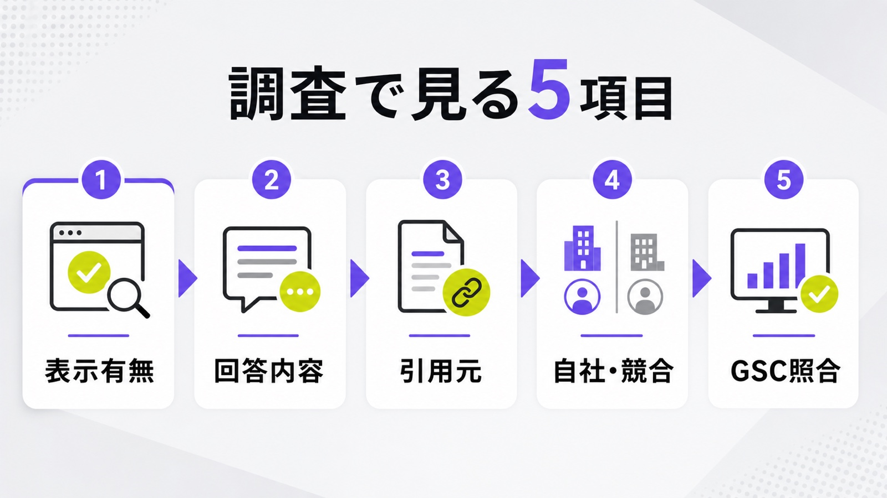
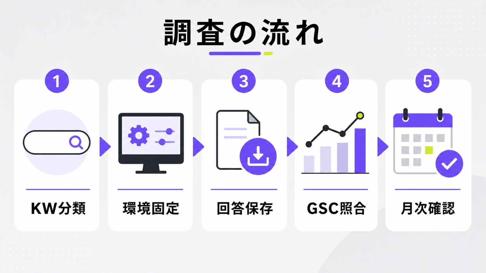
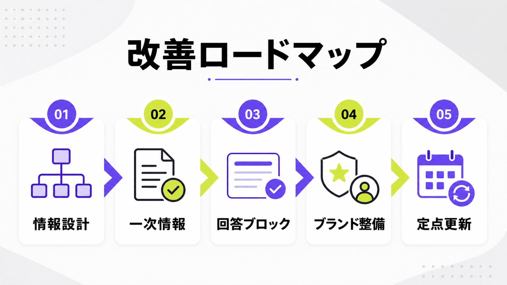

AI Overviews表示調査とは？自社キーワードでAI回答が出るか確認する方法

AI Overviews表示調査とは、自社が狙っている検索キーワードでGoogleのAI回答が表示されているかを確認する調査です。
従来のSEOでは、検索順位やクリック数を中心に成果を確認していました。しかし、AI Overviewsが検索結果の上部に表示されると、ユーザーはサイトをクリックする前に答えを得られる可能性があります。AI Overviewsは、通常の検索結果内でAI生成の要約と関連リンクを表示する機能です。
そのため、これからのSEO・AI検索対策では「何位にいるか」だけでなく、「AI回答が表示されているか」「自社が引用されているか」「競合がAI回答内に出ているか」まで確認する必要があります。本記事では、AI Overviews表示調査の考え方、確認すべき項目、具体的な進め方、調査後の改善方法を解説します。
目次

AI Overviews表示調査とは
AI Overviews表示調査とは、自社の重要キーワードでAI Overviewsが表示されているかを確認し、表示内容や引用元を記録する調査です。
単に「AI回答が出ているか」を見るだけでは不十分です。検索結果のどこに表示されているのか、どのサイトが引用されているのか、自社ページは含まれているのか、競合がどのように露出しているのかまで確認することで、SEOやコンテンツ改善に使えるデータになります。
AI Overviewsの表示有無をキーワード単位で確認する調査
AI Overviews表示調査では、まず自社が狙っているキーワードごとに、AI Overviewsが表示されるかを確認します。対象になるのは、サービス名、課題系キーワード、比較キーワード、記事流入キーワード、問い合わせに近いキーワードなどです。
AI Overviewsは、すべての検索で必ず表示されるわけではありません。GoogleはAI Overviewsの表示について、次のように説明しています。
“AI Overviews are only shown when our systems determine that it is additive to classic Search”
日本語訳：AI Overviewsは、Googleのシステムが通常検索に付加価値があると判断した場合にのみ表示される。
つまり、AI Overviewsの表示有無はキーワードごとに変わります。自社サイト全体をざっくり見るのではなく、重要キーワードごとに表示状況を確認する必要があります。とくにCVに近いキーワードでAI回答が出ている場合は、クリック率や問い合わせ数に影響する可能性があります。
検索順位だけでは流入リスクを判断しにくい
検索順位が高くても、AI Overviewsが検索結果の上部に表示されている場合、自社ページの見え方は大きく変わります。従来の自然検索1位でも、AI回答、広告、強調スニペット、動画、画像などが上部に並ぶと、ユーザーの視線は分散します。
Ahrefsの調査では、AI Overviewsが表示されるキーワードにおいて、上位ページの平均クリック率が大きく下がる傾向が示されています。Ahrefsは、AI Overviewsとクリック率の関係について、次のように述べています。
“the presence of AI Overviews now reduces the click-through rate for position 1 by ~58%”
日本語訳：AI Overviewsの存在は、検索1位ページのクリック率を約58％低下させる。
この結果は、検索1位を取るだけでは十分ではないことを示しています。AI Overviewsが表示されるキーワードでは、自社がAI回答内に引用されているか、競合が引用されているかまで確認する必要があります。
AI OverviewsとAI Modeの違いも押さえておく
AI Overviewsは、通常のGoogle検索結果内に表示されるAI生成の要約です。一方でAI Modeは、より会話型・探索型の検索体験であり、複雑な比較や深掘りの質問に対応する検索モードです。まず調査対象にしやすいのは、通常検索上に表示されるAI Overviewsです。
AI OverviewsとAI Modeでは、使われるモデルや表示されるリンクが変わる可能性があります。Googleは、AI ModeとAI Overviewsで異なるモデルや技術が使われる場合があり、表示される回答やリンクも変わると説明しています。そのため、通常検索上のAI Overviewsと、AI Mode上の回答は分けて確認する必要があります。
AI Overviews表示調査が必要な理由
AI Overviews表示調査が必要な理由は、検索順位だけでは自社の検索露出を判断できなくなっているためです。
検索結果にAI回答が表示されると、ユーザーは検索結果ページ上で情報を得られます。自社が上位表示されていても、AI回答内で競合や第三者メディアが引用されていれば、ユーザーの認知はそちらに流れる可能性があります。SEO流入を守るには、順位だけでなくAI回答内の露出まで確認する必要があります。
自然検索流入の減少要因を切り分けるため
自然検索流入が減ったとき、原因は検索順位の低下だけとは限りません。順位は大きく変わっていないのに、クリック数やCTRだけが落ちている場合、AI Overviewsや広告、その他のSERP機能によってクリック前のユーザー行動が変わっている可能性があります。
Google Search Consoleでは、AI OverviewsやAI Modeに表示されたリンクも通常の検索トラフィックに含まれ、パフォーマンスレポートの「ウェブ」検索タイプ内で扱われます。出典：Google Search Central｜AI features and your website。そのため、GSCだけを見てもAI Overviews単体の影響は判断しにくく、実際の検索結果を確認する調査が必要になります。
AI回答内に自社が引用されているか確認するため
AI Overviewsに自社ページが引用されていれば、ユーザーがクリックする前の段階で自社名や情報に触れる可能性があります。逆に、検索順位では上位にいるのにAI回答内では引用されていない場合、AI検索上の露出を競合に奪われている状態です。
重要なのは、順位と引用のズレを見ることです。自社が3位でもAI回答に引用されているケースもあれば、1位でも引用されないケースもあります。AI Overviews表示調査では、このズレをキーワードごとに確認し、どのページを改善すべきかを判断します。
競合のAI検索露出を把握するため
AI Overviews表示調査では、自社だけでなく競合の露出も確認します。どの競合サイトが引用されているのか、比較サイトや業界メディアが出ているのか、一次情報を持つ企業サイトが優先されているのかを見ることで、AI回答内で評価されている情報の傾向が見えてきます。
競合が引用されている場合は、そのページにどのような情報があるのかを確認します。料金、事例、比較表、FAQ、独自調査、監修者情報など、自社ページに不足している要素が見つかることがあります。調査結果を競合分析として使える点も、AI Overviews表示調査の大きな価値です。
SEO改善の優先順位を決めるため
AI Overviewsが表示されるキーワードを把握すると、SEO改善の優先順位を決めやすくなります。すべての記事を一律でリライトするのではなく、AI回答が表示されていて、自社が引用されておらず、かつCVに近いキーワードから優先的に改善できます。
たとえば、検索ボリュームは小さくても問い合わせに近い比較キーワードで競合が引用されている場合、改善優先度は高くなります。反対に、情報収集目的が強く、CVから遠いキーワードでAI Overviewsが表示されていても、すぐに大きな施策を打つ必要はありません。
AI Overviewsが表示されやすい検索クエリの傾向
AI Overviewsは、すべての検索で表示されるわけではありません。AIによる要約が役立つと判断される検索で表示されます。
そのため、調査では「どのキーワードで表示されるか」を分類することが重要です。情報収集型、比較検討型、商業系、指名系などに分けて見ると、自社サイトのどの領域がAI Overviewsの影響を受けやすいのかがわかります。
情報収集型のキーワード
AI Overviewsは、「とは」「違い」「方法」「メリット」「デメリット」などの情報収集型キーワードで表示されやすい傾向があります。ユーザーが複数の情報を短時間で把握したい検索では、AIが要点をまとめる価値が高いためです。
SEO記事で狙ってきたキーワードの多くは、この情報収集型に該当します。たとえば「AI Overviewsとは」「LLMOとは」「SEOとAIOの違い」のような検索では、ユーザーが基本情報を知りたい状態です。こうしたキーワードでは、AI回答に引用されるかどうかが認知獲得に影響します。
比較・検討型のキーワード
「おすすめ」「比較」「選び方」「費用」「相場」などの比較・検討型キーワードも、AI Overviewsの調査対象に入れるべきです。これらの検索は、単なる情報収集よりも購買や問い合わせに近い位置にあります。
BtoBサービス、士業、SaaS、Webマーケティング支援などでは、比較・検討型キーワードから問い合わせが発生しやすくなります。ここでAI Overviewsが表示され、競合や比較メディアが引用されている場合、自社が候補に入る前にユーザーの判断材料を奪われる可能性があります。
商業・指名に近いキーワード
AI Overviewsは、情報収集型だけでなく、商業・取引・指名に近い検索にも広がっています。Semrushの2025年調査では、AI Overviewsが表示される検索のうち、情報収集型の割合は2025年1月の91.3％から10月には57.1％に低下し、商業・取引・ナビゲーショナル系の割合が増えています。出典：Semrush｜AI Overviews' Impact on Search in 2025
これは、企業にとってかなり重要です。自社名、サービス名、競合比較、料金、評判、事例などの検索でAI回答が表示されると、ブランド指名後のユーザー行動にも影響します。指名検索だから安全とは言えず、ブランド周辺のAI検索露出も確認が必要です。
長く具体的な検索クエリ
AI Overviewsは、長く具体的な検索クエリでも表示されやすい傾向があります。Semrushの調査では、AI Overviewsが表示されるキーワードは、表示されないキーワードより長く具体的な傾向があると分析されています。出典：Semrush｜AI Overviews' Impact on Search in 2025
これは、従来のロングテールSEOに影響します。これまで企業は、細かい検索意図に合わせて記事を作り、ロングテール流入を獲得してきました。しかし、AI Overviewsが細かい疑問に直接答えるようになると、ロングテール記事の役割も変わります。記事単体の順位だけでなく、AI回答に使われる情報設計が重要になります。
AI Overviews表示調査で確認すべき項目
AI Overviews表示調査では、表示の有無だけでなく、検索結果全体の状態を確認します。
AI回答が表示されているか、回答内で何が説明されているか、どのサイトが引用されているか、自社ページは含まれているか、競合がどの程度出ているかを記録します。これらを一覧化することで、SEO改善の優先順位を判断できます。
| 調査項目 | 確認する内容 | 見るべきポイント |
|---|---|---|
| AI Overviews表示有無 | 対象キーワードでAI回答が出るか | 表示されるKWは流入変動リスクがある |
| 表示位置 | 検索結果のどこに出るか | 自然検索より上に出ているか |
| 回答内容 | AIが何を要約しているか | 自社が答えるべき論点とズレていないか |
| 引用元 | どのサイトがリンクされているか | 競合、比較サイト、公式情報、メディアを分類する |
| 自社掲載有無 | 自社ページが引用されているか | 上位表示とAI引用のズレを見る |
| 競合掲載有無 | 競合サイトが引用されているか | 競合のAI検索露出を確認する |
| 通常順位 | 自社・競合の自然検索順位 | 順位と引用の関係を見る |
| 広告表示 | 広告が表示されているか | 自然検索以外の占有要素も確認する |
| その他SERP機能 | PAA、動画、画像、強調スニペットなど | 検索結果全体の見え方を把握する |

AI Overviewsの表示有無と表示位置
最初に確認すべき項目は、AI Overviewsの表示有無です。対象キーワードを検索し、AI回答が表示されるか、どの位置に出るかを記録します。検索結果の最上部に出るのか、広告の下に出るのか、通常検索結果の途中に出るのかで、ユーザーへの影響は変わります。
表示位置は、スクリーンショットで残しておくと後から比較しやすくなります。AI Overviewsは表示内容や位置が変わることがあるため、調査日時、検索地域、デバイス、ブラウザ条件も一緒に記録しておくべきです。定点観測することで、月ごとの変化も追いやすくなります。
回答内容と引用元
AI Overviewsが表示されている場合は、回答文の内容を確認します。ユーザーの疑問に対して、どの論点が取り上げられているのか、どの情報が省略されているのか、自社が伝えたい内容とズレがないかを見ます。
次に、AI回答内の引用元を記録します。自社サイト、競合サイト、比較メディア、公的機関、ニュースサイト、Q&Aサイトなどに分類すると、AIがどの種類の情報を参照しているのかが見えてきます。自社が引用されていない場合は、引用元ページと自社ページの差分を確認します。
自社掲載有無と競合掲載有無
AI Overviews表示調査では、自社がAI回答に引用されているかを必ず確認します。検索順位が高くても引用されていなければ、AI検索上の露出は十分とは言えません。逆に、順位が少し低くてもAI回答に引用されているページは、情報設計の参考になります。
競合掲載有無も重要です。競合がどのキーワードで引用されているのか、どのページが使われているのかを見ることで、自社が負けている論点を把握できます。特に、問い合わせに近いキーワードで競合だけが引用されている場合は、早めにページ改善へつなげるべきです。
通常順位とCTRの変化
AI Overviewsの表示状況は、通常順位やCTRの変化と合わせて見る必要があります。順位が落ちていないのにCTRだけ下がっている場合、AI回答や広告、その他のSERP機能によってクリックが分散している可能性があります。
Search Consoleでは、対象キーワードの表示回数、クリック数、CTR、平均掲載順位を確認します。そのうえで、実際の検索結果にAI Overviewsが表示されているかを照合します。GSCの数値とSERPの実画面を組み合わせることで、単なる順位変動では見えない原因を把握できます。
AI Overviews表示調査のやり方
AI Overviews表示調査は、やみくもに検索しても精度が上がりません。対象キーワード、検索条件、記録項目、確認頻度を決めたうえで実施する必要があります。
一度だけ確認するのではなく、同じ条件で定点観測することも重要です。AI Overviewsは表示有無や引用元が変わる可能性があるため、継続的に記録することで、SEO施策の効果や競合の変化を把握できます。

対象キーワードをカテゴリ別に分ける
まず、自社が調査すべきキーワードをカテゴリ別に分けます。指名キーワード、サービスキーワード、課題キーワード、比較キーワード、費用・相場キーワード、既存上位記事の流入キーワード、CVに近いキーワードなどに分けると判断しやすくなります。
すべてのキーワードを同じ重みで見る必要はありません。優先すべきは、売上や問い合わせに近いキーワードです。検索ボリュームが小さくても、CVに近いキーワードでAI Overviewsが表示され、競合が引用されている場合は、改善優先度が高くなります。
検索環境を揃えて確認する
AI Overviewsの表示は、地域、デバイス、検索履歴、ログイン状態、ブラウザ環境などによって変わる可能性があります。そのため、調査時には検索条件をできるだけ揃える必要があります。毎回バラバラの環境で確認すると、表示結果の違いが施策による変化なのか環境差なのか判断できません。
実務では、検索日時、地域、デバイス、ブラウザ、ログイン状態、シークレットモードの使用有無を記録します。完全に同じ結果を再現することは難しくても、条件を固定しておけば、月次比較や競合比較の精度は上がります。
AI回答の内容と引用URLを保存する
AI Overviewsが表示された場合は、回答文と引用URLを保存します。スクリーンショットだけでなく、引用されているページのURL、サイト名、ページタイトル、自社・競合・第三者メディアの分類まで記録しておくと、後から分析しやすくなります。
回答内容も重要です。AIがどの論点を要約しているのか、どの情報が不足しているのか、どの表現が使われているのかを確認します。自社ページに不足している論点があれば、リライトや追記の候補になります。
Search Consoleのデータと照合する
AI Overviews表示調査は、Search Consoleのデータと組み合わせて判断します。対象キーワードの表示回数、クリック数、CTR、平均掲載順位を確認し、AI Overviewsの表示有無と照合します。順位は維持しているのにCTRが下がっているキーワードは、優先的に確認すべきです。
ただし、Search ConsoleだけでAI Overviewsの影響を完全に切り分けることは難しいです。AI機能に表示されたリンクも通常の検索パフォーマンス内で扱われるため、GSCの数値を見たうえで、実際のSERPを確認する必要があります。出典：Google Search Central｜AI features and your website
月次で定点観測する
AI Overviews表示調査は、一度実施して終わりではありません。AI回答の表示有無、引用元、回答内容は変動する可能性があります。そのため、重要キーワードは月次で確認し、CVに近いキーワードは必要に応じて週次で見ると変化を追いやすくなります。
定点観測では、前月との変化を見ます。AI Overviewsが新たに表示されたキーワード、自社が引用されるようになったキーワード、競合に入れ替わったキーワード、CTRが下がったキーワードを抽出します。これにより、次に改善すべきページが明確になります。
AI Overviews表示調査後に行うべきSEO改善
AI Overviews表示調査の目的は、表示状況を確認することではありません。調査結果をもとに、自社ページの情報設計やコンテンツ品質を改善することが本来の目的です。
Google検索の生成AI機能では、従来のSEO基盤が引き続き重要であり、検索インデックス内の関連ページをもとにAI回答のリンクが構成されます。そのため、AI向けの特殊な裏技を探すより、ユーザーにとって有益で、検索エンジンにも理解しやすいページへ改善することが重要です。

既存記事の情報設計を見直す
まず行うべき改善は、既存記事の情報設計の見直しです。AI Overviewsで引用されている競合ページと自社ページを比較し、結論のわかりやすさ、見出し構成、比較表、FAQ、事例、一次情報の有無を確認します。
AIに引用されやすいページは、ユーザーの疑問に対して明確に答えていることが多いです。冒頭で結論を示し、H2・H3ごとに検索意図へ答え、表や箇条書きで比較しやすくすることで、ユーザーにとっても検索エンジンにとっても理解しやすいページになります。
一次情報・独自データを追加する
AI Overviews対策では、どこにでもある一般論だけでは弱くなります。自社の実績、独自調査、顧客事例、導入前後の変化、業界特有の知見などを追加することで、ページの価値を高められます。
Googleは、生成AI検索での可視性について、独自性があり有益なコンテンツの重要性を示しています。一般論を増やすのではなく、自社だから書ける情報を入れることが、AI検索時代のコンテンツ改善では重要です。出典：Google Search Central｜Google's Guide to Optimizing for Generative AI Features on Google Search
引用されやすい回答ブロックを作る
AI Overviewsに引用される可能性を高めるには、ページ内に明確な回答ブロックを作ることが有効です。「AI Overviewsとは」「AI Overviews表示調査とは」「調査で見るべき項目」「調査後に改善すべき内容」のように、検索意図に対する答えを見出し単位で明確にします。
ただし、AI向けに不自然な文章へ変える必要はありません。ユーザーが読みやすい構成にし、結論、理由、具体例、注意点の順で自然に説明することが重要です。表、FAQ、チェックリスト、比較項目を加えると、読み手が短時間で理解しやすくなります。
指名検索・ブランド検索の情報も整える
AI Overviewsの影響は、一般キーワードだけではありません。自社名、サービス名、料金、評判、事例、競合比較など、ブランド周辺の検索にも広がる可能性があります。指名検索で誤った情報や古い情報が引用されると、問い合わせ前の印象に影響します。
そのため、会社概要、サービスページ、料金ページ、事例ページ、FAQ、比較ページなどの情報を整える必要があります。自社に関する基本情報がサイト内外で一貫していれば、ユーザーもAIも情報を理解しやすくなります。
特殊なAI用ファイルや裏技に頼らない
AI Overviews対策では、特殊なAI専用ファイルや裏技に頼る必要はありません。Googleは、AI OverviewsやAI Modeに表示されるための技術要件について、次のように説明しています。
“There are no additional technical requirements.”
日本語訳：追加の技術要件はない。
そのため、AI Overviews対策の中心は、特殊な技術対応ではありません。検索意図に対して明確に答える構成、信頼できる情報、独自の実績や事例、読みやすいページ設計を整えることが重要です。llms.txtやAI専用マークアップだけで解決しようとするのではなく、SEOの基本とコンテンツ品質を見直すべきです。
AI Overviews表示調査を外部に依頼するべきケース
AI Overviews表示調査は、自社でも始められます。ただし、調査対象キーワードが多い場合や、調査結果をSEO改善までつなげたい場合は、外部に依頼したほうが効率的です。
特に、SEO流入や問い合わせ数が下がっている企業では、原因の切り分けが重要になります。順位低下なのか、AI Overviewsの影響なのか、競合の情報設計に負けているのかを確認し、改善施策まで落とし込む必要があります。
重要キーワードが多く手作業では追いきれない場合
数十〜数百のキーワードを調査する場合、手作業だけでは時間がかかります。検索結果の確認、スクリーンショット保存、引用元の記録、競合分類、Search Consoleとの照合まで行うと、社内リソースだけでは対応しきれないことがあります。
この場合は、調査項目を決めたうえで、外部にまとめて依頼すると効率的です。重要なのは、単なる一覧作成ではなく、どのキーワードを優先改善すべきかまで判断できる形でレポート化することです。
SEO流入やCV数が減っている場合
SEO流入や問い合わせ数が減っている場合、早めにAI Overviews表示調査を行うべきです。順位が下がっていれば通常のSEO改善が必要ですが、順位が維持されているのにクリック数が落ちている場合は、SERP上の見え方が変わっている可能性があります。
とくに、比較系や費用系などCVに近いキーワードでCTRが落ちている場合は注意が必要です。AI Overviews内に競合や比較メディアが引用されていれば、ユーザーが自社ページへ来る前に意思決定している可能性があります。
調査だけでなく記事改善まで行いたい場合
AI Overviews表示調査は、調査だけで終わると成果につながりません。重要なのは、調査結果をもとに既存記事を改善し、AI回答に引用されやすい情報設計へ変えることです。
外部に依頼する場合は、AI Overviewsの表示調査、競合分析、既存記事の改善提案、リライト、追加コンテンツ作成まで一貫して依頼できるかを確認するとよいです。調査と記事改善が分断されると、結局どこから手を付けるべきかわからなくなります。
まとめ：AI Overviews表示調査はSEO流入を守るための現状把握
AI Overviews表示調査は、AI検索時代のSEOで欠かせない現状把握です。検索順位だけを見ても、自社が検索結果上でどのように見えているかは判断できません。AI回答が表示されているか、自社が引用されているか、競合が露出しているかまで確認する必要があります。
まずは、自社の重要キーワードをカテゴリ別に分け、AI Overviewsの表示有無、回答内容、引用元、自社掲載有無、競合掲載有無を確認しましょう。そのうえで、Search ConsoleのCTRやクリック数と照合すれば、流入減少の原因を把握しやすくなります。
AI Overviewsの影響を受けているキーワードが見つかったら、既存記事の情報設計を見直し、独自情報や事例、比較表、FAQなどを追加することが重要です。AI向けの特殊な裏技に頼るのではなく、ユーザーの疑問に対して明確で信頼できる情報を提供することが、結果的にAI検索での露出にもつながります。
AIMAでは、AI Overviewsの表示状況やAI検索での引用・言及状況を確認し、改善すべき記事やサービスページまで整理します。まず自社の現状を知りたい場合は、LLMO診断から確認できます。
参考文献
参考：Google Search Central｜AI features and your website
参考：Google Search Central｜Google's Guide to Optimizing for Generative AI Features on Google Search